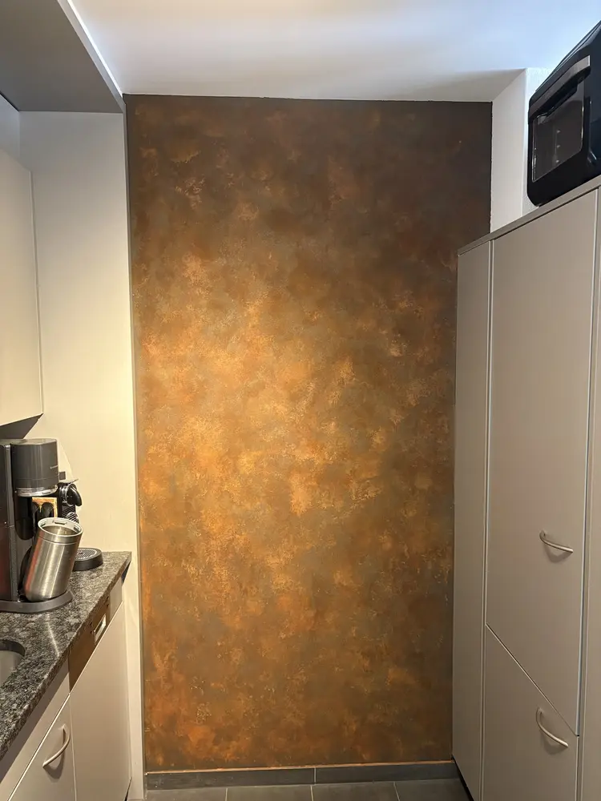
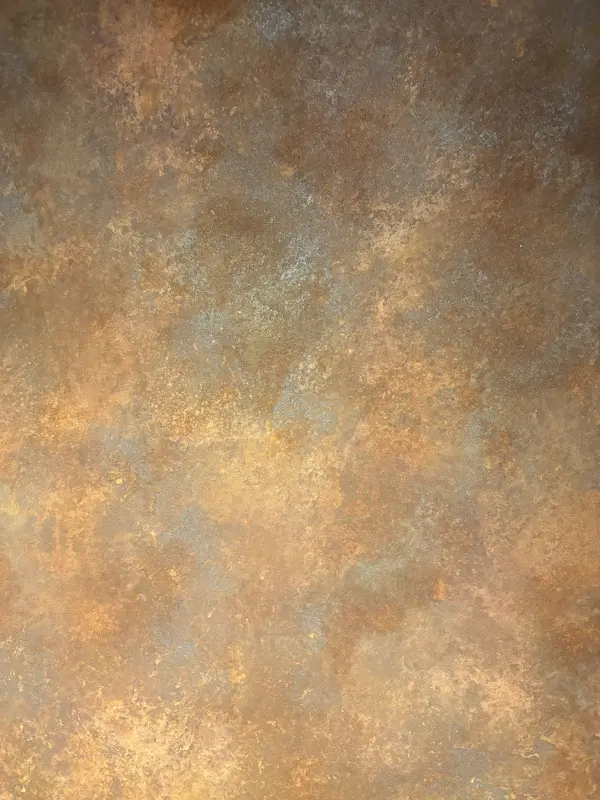
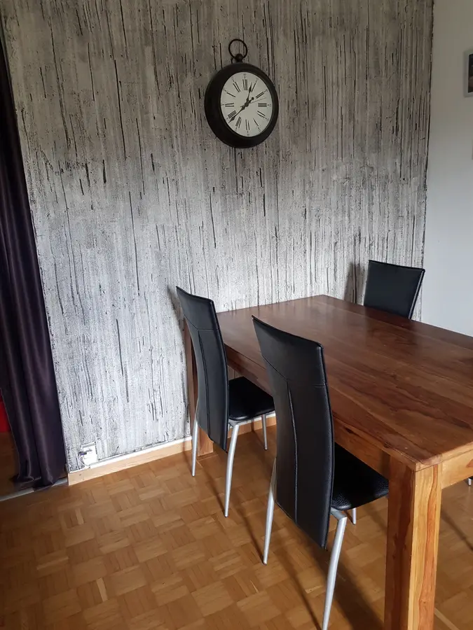
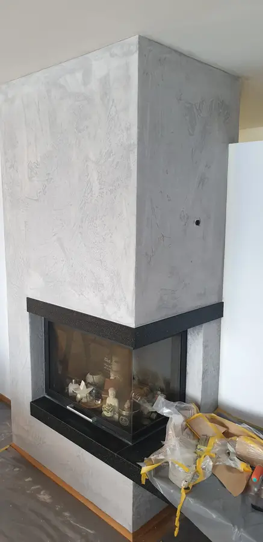
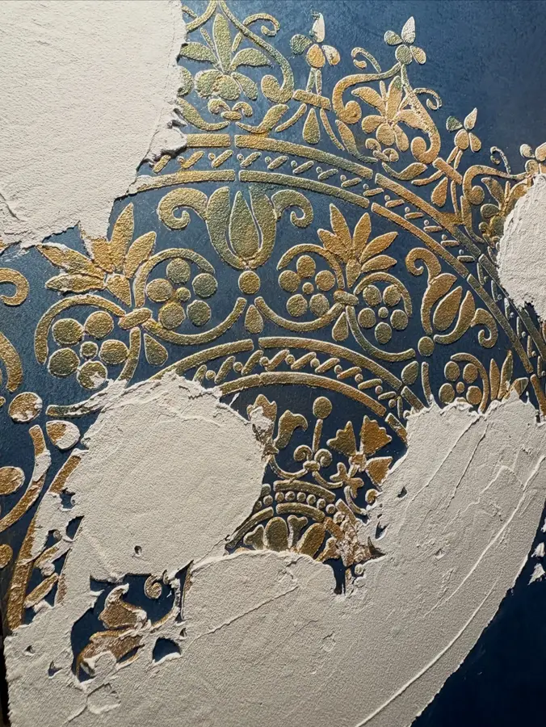
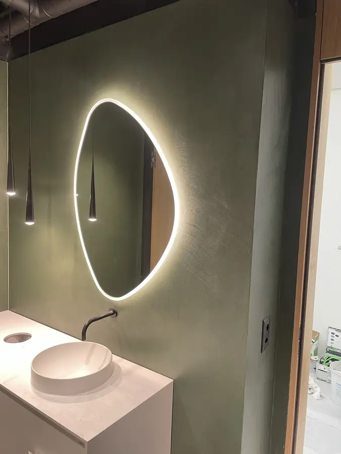
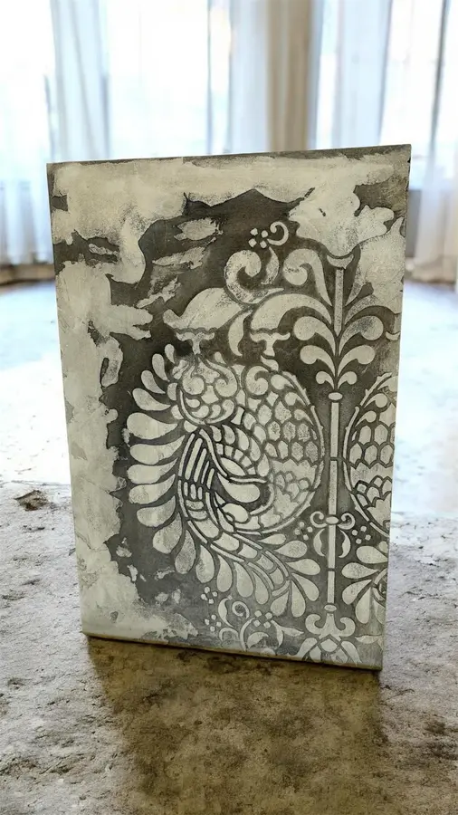
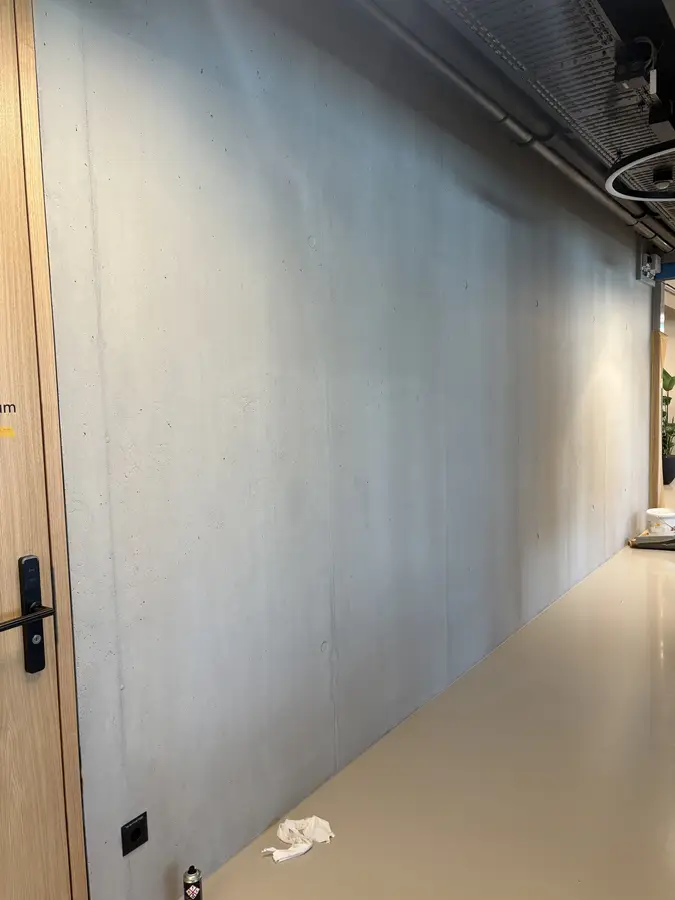

Oberflächendesign
Dekorative Oberflächen
Natürliche Materialien für Wand und Boden, für Räume mit eigener Handschrift und einem guten Raumklima.

Projekt im Fokus
Küchenwand in Rost-Optik
Mit Novacolor Ironic Fondo als Grund und Ironic Liquido als Effekt entsteht eine Wand, die aussieht wie gealtertes Metall. Kupfer, Rost und ein Hauch Blau wechseln sich ab, je nach Licht wirkt die Fläche anders.
- MaterialNovacolor Ironic Fondo + Liquido
- RaumKüche, Akzentwand
- WirkungMetall- und Rost-Optik






